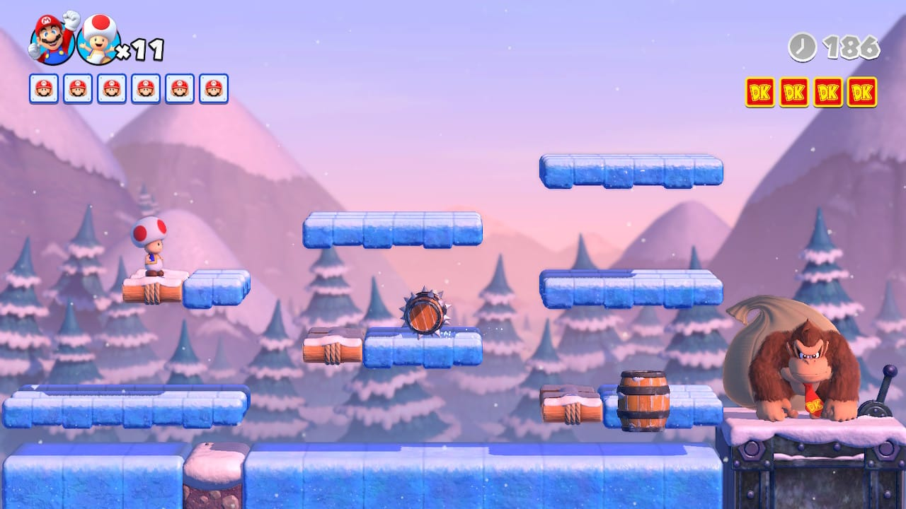
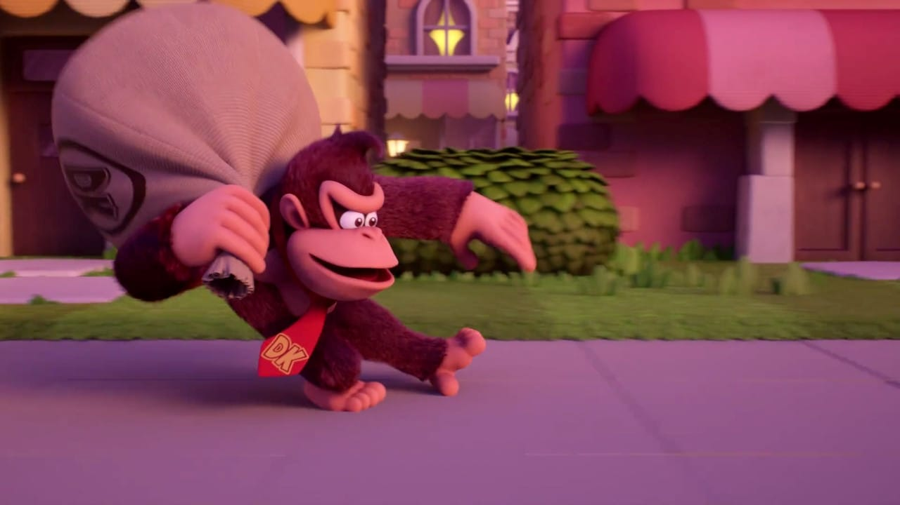
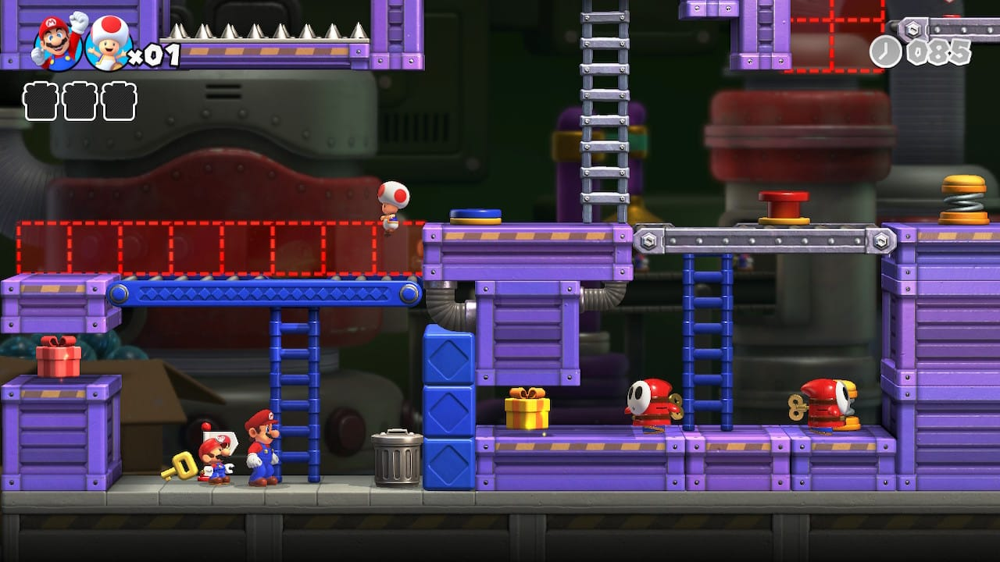
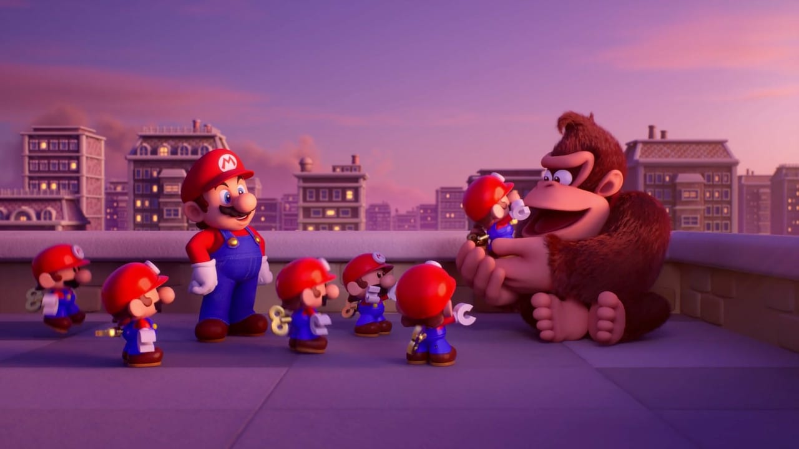

Développé par Nintendo Software Technology (NST), une filiale de Nintendo,
Mario vs. Donkey Kong (l'original) a été publié pour la Game Boy Advance en 2004.
C'est le premier jeu de la série Mario vs. Donkey Kong, bien qu'il y ait déjà eu des jeux impliquant les 2 personnages.
Aujourd'hui, presque 20 ans plus tard, Mario vs. Donkey Kong fait son retour en remake.
L'histoire commence avec Donkey Kong qui regarde une publicité des jouets Mini Mario Toys.
Il décide d'aller en trouver au magasin, mais, dommage, ils n'en ont plus en stock...
C'est à ce moment que Donkey Kong décide de voler les Mini Mario Toys depuis l'usine située à côté.
En sortant de l'usine, il se trouve nez à nez avec Mario...
La course poursuite de Mario vs. Donkey Kong commence !
Un très bon jeu d'énigme qui est très plaisant à jouer, malgré quelques défauts de suivi des personnages qu'on a constatés en jouant à deux.
Graphiquement, il a un vrai charme qu'on retrouve dans les jeux Mario.
Un très bon remake qui respecte l'œuvre originale.
Voici quelque images du jeu




...